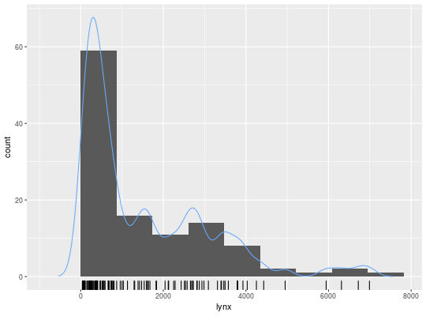

Plots a histogram and density estimates using ggplot.
gghistogram(x, add.normal = FALSE, add.kde = FALSE, add.rug = TRUE, bins, boundary = 0)
| x | a numerical vector. |
|---|---|
| add.normal | Add a normal density function for comparison |
| add.kde | Add a kernel density estimate for comparison |
| add.rug | Add a rug plot on the horizontal axis |
| bins | The number of bins to use for the histogram. Selected by default
using the Friedman-Diaconis rule given by |
| boundary | A boundary between two bins. |
| … | Not used (for consistency with lag.plot) |
None.
gghistogram(lynx, add.kde=TRUE)